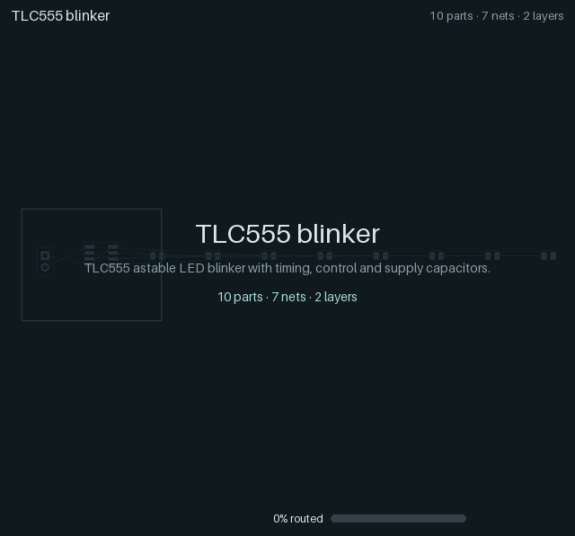
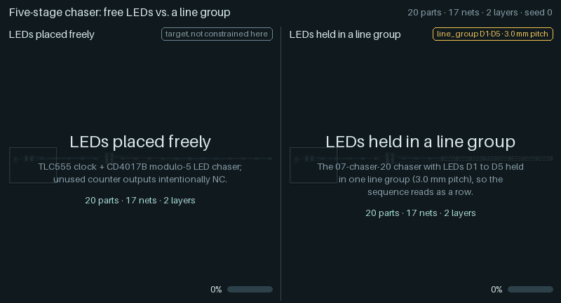

yapnr¶
Yet another place and route engine for printed circuit boards.

The 555 flasher (a TLC555 astable blinker, 10 parts, 2 layers) from the regression ladder: from unplaced footprints to 100 % routed, with the placement starts and routes it was chosen from, ending on KiCad’s clean DRC verdict.

Left: LEDs placed freely. Right: the same chaser with its LEDs held in a line group; the placer moves and turns the whole line.
yapnr places components and routes copper for KiCad boards. It uses a mechanical, Monte-Carlo-driven search: hierarchical block synthesis, power-first placement, native KiCad routing and DRC in the loop, and electrical contracts (current, pairs, plane access) declared next to the design.
The engine is being migrated here from the Splanc repository,
where it was developed to lay out the Splanc Mini board. The migration plan and progress are in
docs/ and WORKLOG.md.
Status¶
Alpha: this repository holds the build, CI and documentation scaffolding, a command-line stub, the
migration plan, and the engine imported from Splanc at its original
paths under hardware/: its committed history and its newer, uncommitted state
(manifest). The package restructuring follows. KiCad 10 only.
Quick start¶
With Bazelisk installed as bazel:
bazel run //:yapnr -- --version # the CLI
bazel run //:doctor # environment report
bazel test //... # unit tests and repository checks
bazel run //docs:build # documentation -> docs/site/html/
See DEVELOPERS.md for setup (including the headless KiCad copy on macOS) and CONTRIBUTING.md for the contribution policy.
Container image¶
ghcr.io/studio-fug/yapnr bundles KiCad 10, CPython 3.11 with CPU-only torch, and yapnr, for
linux/amd64 and linux/arm64, so running yapnr needs Docker and nothing else:
docker run --rm ghcr.io/studio-fug/yapnr:edge doctor
edge follows main; release tags (X.Y.Z, X.Y, latest) start with v0.1.0. See
docs/containers.md for projects, UID mapping, resource limits and Apple
Silicon, and docs/releases.md for versioning and releases.
License¶
Copyright (C) 2026 Kevin Balke. Licensed under the GNU Affero General Public License v3.0 or later
(AGPL-3.0-or-later); see LICENSE. Third-party material is listed in
THIRD_PARTY.md.